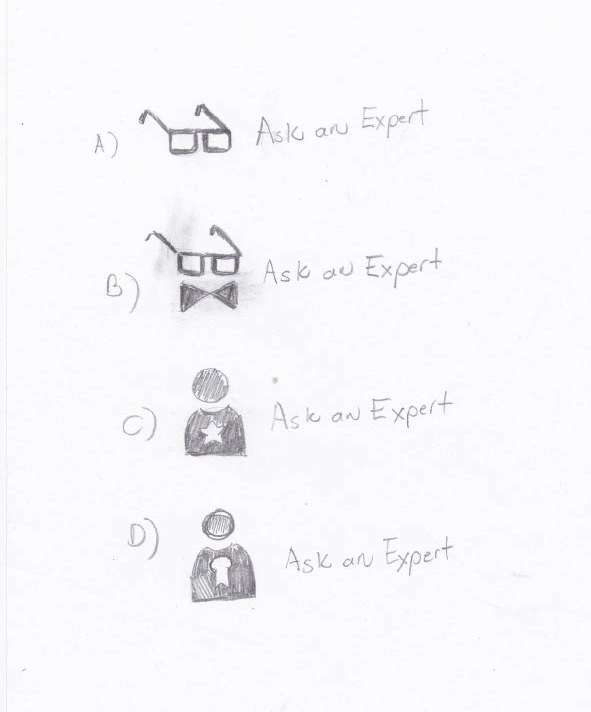
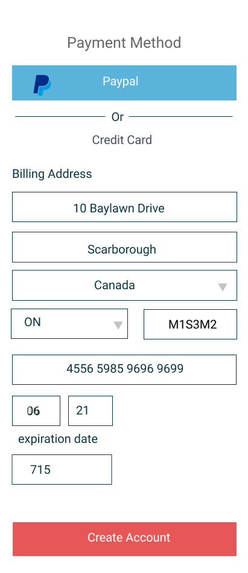
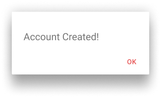

Do you have a problem which you need a quick answer to?
Often times we don’t know who to turn to.. I designed a solution that connects you to pool of verified experts when you pose them a question for any subject you can think of.
View Prototype
Introduction
Problem
In everyday life, we often find ourselves in situations where we need a quick “answer” to. We could go to Google or Youtube to look it up, but the answer needs to be tailored to the user’s situation as well. Optimally, we would have access to an expert who patiently takes us by the hand to answer all questions or shows us how to do something. However, such experts are always hard to come by just when you need them.
Solution
The solution is a videochat service that connects you to a pool of experts after typing in
a question. You also need to input a category for your question. A query then sends your question to a pool of experts tagged with that category. After reviewing their profiles and qualifications, you choose an expert to start a videochat with. You are buying a chunk of the experts time and can ask the expert additionally anything during the videochat.
Discovery Phase
User Survey
In the user survey, I did find that 82.76% of persons thought that a videochat app with an expert was a useful tool. I found that most people turn to a search in Google or watch a Youtube video if facing a question they cannot answer. So what would cause them to use a videochat app? They would prefer to use a videochat app when:
They needed continuous help and not just one question answered.
They couldn’t find the answers they were seeking elsewhere.
They could find the answers but they weren’t tailored to the user’s situation.
Users’ main concern about choosing to use the video chat app included:
Risking that the call is too short to learn anything useful.
Risking that the expert will not be able to answer my question.
Risking that the expert will add a lot of “filler” to the call.
Justanswer.com
Justanswer.com lets you ask questions with a credential-verified experts.
You are allowed to pose 1 question to an expert and you may communicate by type until you are satisfied that your question is answered. It does not allow you to buy chunks of time with an expert and talk about anything in excess of your initial question. Its lack of a video interface also doesn’t permit the expert to “show you” visually how to do something. Its strengths are that its experts credentials are verified and that you don’t pay until you are satisfied.
Codementor.io
Codementor.io allows you to buy sessions of real-time help with more advanced programmers. It serves only one niche, computer programming. That said, it serves this market very well. It has an shared interface of a coding environment where the programmer
Wyzant
Wyzant is an online and real-world tutoring company. It has only branched into letting users
“ask a question” as a marketing tool for its website.There is no option to immediately book the tutor who answered your question. The “answering” service on its website strengths are that you can search answered questions and questions are organised by tags.
With the data from the user survey, I constructed two user personas
Name: Jenny
Profession: Stay-at-home mom
Frustrations: She doesn’t like to cook even though she has to, to save money.
Motivations/Goals:
She is a visual learner and would like to follow someone who is an expert cook.
She does not socialize with other moms and would rather pay someone to teach her. However she is not connected to a pool of talent.
Name: Mike
Profession: Junior Programmer
Frustrations: He was taught computer science foundations very well, but is now exposed to a new programming language.
Motivations/Goals He would like an interface
Where a tutor can review his code and make changes on the spot. He would like to pay a tutor for their hourly support and not for solving one problem.
View User Personas
Information Architecture
User Stories and User Flows
Based on the research mentioned, I wrote out 15 user stories. 5 of the user stories will be mapped out further with user flows.
ROLE
TASK
IMPORTANCE
As a user
I would like to sign up for an account
high
As an "expert in my field" user
I would like to sign up for an "expert" account
high
As a returning user
I would like to ask a question
high
As a returning user
I would like to choose from a list of qualifed experts
high
As a returning user
I would like to start a video or text chat with an expert
high
As an "expert" user
I would like to add a skill to my profile
medium
As a returning user
I would like to see my payment history
low
As an "expert" user
I would like to see my total earnings as an expert
low
The user flows included signing up for an account, signing up for an expert account, asking a question, submitting a review, and seeing session history.
The branding for “Ask an Expert” could be described as technical and friendly, with a bit of cheekiness. The primary color is a teal which is both technical and friendly. It is accompanied by a bright red/orange which is only used to stand out in call-to-actions.
A light pink and dark green are accent colors.
For the typography, I used Open Sans for the title in the logo. Headlines and body text are in Roboto. It is both simple and utilitarian.
The illustrations are blocky and low-fi. This adds to the humorous, cheeky factor.
The application allows one to find “experts” in any subject. Nerds are pretty much “super-experts”. Thus I went for nerdy connotations for the logo. It is an illustration of coke-bottle glasses. In the preference testing, I had a competing logo with coke-bottle glasses and a bow-tie. I chose just the glasses alone because it’s simplicity burns well into people’s minds.

Logo SketchesFinal Logo
Hi-fi Mockups
At long last I was at the Hi-fi Mockups stage. Here is one illustrating the process of asking a question and being connected to an expert.
I did usability testing for the 5 user flows previously mentioned.
Here you see the last screen of the signup flow on the left. There was no re-assuring pop-up that said “Account Created” before. Here you see I’ve added that.

Closing Screen with No Confirmation Window

Confirmation Window
What I learnt
I struggled a bit with the user testing because most of the participants were telling me that the prototypes were “good” and “excellent” and not constructive feedback. I had the hotspots feature on by accident that highlighted the correct answer when going through a path. I should pose more questions regarding what they struggled with and not just ask if they can follow the path for a process. If I had more time, I would construct more illustrations throughout the prototype and not just 1 on the signup page.